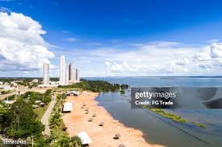

Tocantins é um estado localizado na Região Norte do Brasil, mas com características que também o aproximam da Região Centro-Oeste. Sua capital é Palmas, que foi fundada em 1989 para ser a capital do estado, que foi criado em 1988 a partir do desmembramento de Goiás. Tocantins tem uma área de aproximadamente 277.000 km², e é o penúltimo estado brasileiro em termos de população e densidade populacional, mas com grande potencial econômico e territorial.
